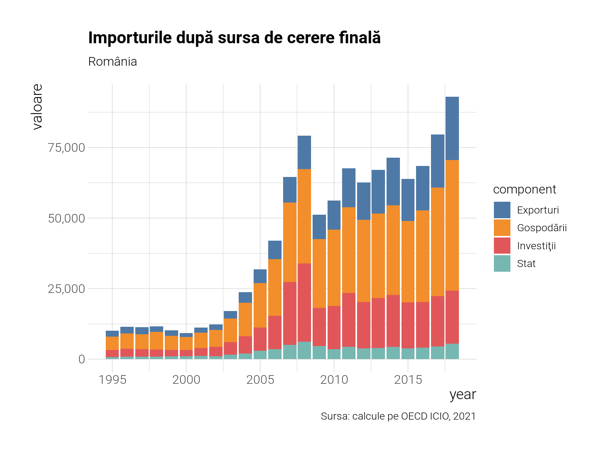

În acest articol folosi tabele de tip input-output pentru a determina cauza importurilor româneşti. Aceste tabele sunt puse la dispoziţie de institutele naţionale de statistică ale statelor, dar există şi tabele care înregistrează tranzacţiile între sectoare din diferite ţări, mult mai detaliate şi interesante decât cele naţionale. Aşa sunt cele puse la dispoziţia publicului de către OECD sau WIOD. Pe coloane sunt trecute industriile care cumpără, pe linii sunt industriile de la care se cumpără (care vând). Transformăm aceste tabele de tranzacţii monetare în coeficienţi, matrici şi aflăm lucruri neaşteptate despre economie. Voi avea un post sau mai multe dedicate doar teoriei modelelor input-output, dar pentru moment voi expune câteva din fundamente aici. Din păcate sunt greu de înţeles fără un background elementar în algebră liniară.
1 Puţină teorie
Vom calcula matricea producţiei sau tehnologiei, \(\textbf{A}\), folosind următoarea formulă matriceală:
\[
\textbf{A} = \textbf{Z}\textbf{x}^{-1}
\]
Unde \(\textbf{Z}\) este matricea tranzacţiilor de care am vorbit mai sus, iar \(\textbf{x}\) este matricea diagonală care are în intrările sale (diagonale, evident) inversul producţiei totale pe fiecare sector. Practic împărţim coloanele producţia totală ca să avem nişte coeficienţi (subunitari). Aceasta este matricea de bază inter-industrii, de producţie sau tehnologică (există diferite denumiri).
Acum vom calcula ceva derivat din această matrice, anume matricea inversă Leontief, \((\textbf{I}-\textbf{A})^{-1}\) care este fundamentală în aceste analize. Premultiplicând această matrice cu \(\textbf{f}\) , o altă matrice sau vector, după caz, cu cererea finală, obţinem cât trebuie să producă fiecare sector în totalitate ca să satisfacă această cerere finală dar şi consumul intermediar al industriilor. Matricea inversă Leontief poate fi scrisă ca serie infinită de matrici, aratând astfel că există mai multe runde (infinite teoretic) de producţie. Practic orice cantitate de cerere finală pune în funcţiune mai multe runde de producţie succesive.
Putem calcula conţinutul de importuri din exporturi, de exemplu (un simplu exemplu de cerere finală) cu următoarea formulă.
\[
r = \frac{\textbf{s}^T\textbf{M}(\textbf{I}-\textbf{A})^{-1}\textbf{e}}{\textbf{s}^T\textbf{e}}
\]
Unde \(\textbf{s}^T\) este vectorul sumă, \(\textbf{M}\) matricea coeficienţilor de import \(\textbf{e}\) matricea de exporturi sau vectorul exporturi dacă le adunăm la nivel de ţară. Putem să nu folosim vectorul sumă şi să avem importuri dezagregate pe surse de cerere finală sau exporturi. De exemplu putem răspunde unor întrebări de genul: cu cât cresc importurile de petrol din Rusia în România pentru a satisface un dolar de producţie auto exportată în Germania. La acest nivel se poate merge, dar va fi foarte greu să-ţi prezinţi rezultatele neavând decât matrici de valori. Mai sunt posibile şi multe alte calcule în acest cadru teoretic dar în acest articol vom analiza importurile după cauzele lor corespunzătoare din cererea finală ca să vedem cât e fiecare categorie responsabilă de aceste importuri.
Vom folosi tabelele de la OECD care acoperă perioada 1995-2018 şi vom descompune variaţiile anuale în importuri după cauzele care le generează. Am calculat matrici cu aceste importuri de dimensiuni 45 x 4 (45 de sectoare de import şi 4 categorii de cerere finală - Consum privat, Stat, Investiţii, Exporturi) pentru fiecare din cele 66 de ţări şi 24 de ani. Dar ne vom axa pe România în principal şi pe ţările est-europene. Să descompunem importurile pentru România.
Code
importuri %>%filter(country=="Romania") %>%group_by(year, component) %>%summarise(valoare=sum(valoare)) %>%ungroup() %>%ggplot(aes(x=year, y=valoare, fill=component)) +geom_col() +scale_fill_tableau() +labs(title="Importurile după sursa de cerere finală", subtitle="România", caption="Sursa: calcule pe OECD ICIO, 2021") +scale_y_continuous(labels=scales::number_format(big.mark =","))

Observăm că majoritatea importurilor sunt determinate de consumul gospodăriilor private, o parte de investiţii şi o parte de exporturi. Statul, prea puţin. Trebuie să facem o menţiune aici şi să spunem că acestea nu sunt importuri cerute în mod direct de fiecare din categoriile respective, ci aceste categorii, prin consumul lor - ele pot cumpăra pur domestic, determină producţie pe lanţuri de valoare care vor necesita şi importuri. Acest lucru calculăm aici. Toate, cu excepţia exporturile, au şi consum din import în mod direct, fără să mai treacă prin lanţurile autohtone ca materie de procesat, iar în cazul gospodăriilor procentul este cam jumătate - jumătate din importurile totale generate sunt directe. Restul indirecte - adică trec prin lanţuri de procesare autohtone înainte de a fi vândute. Să vedem acum, sub formă de tabel, importurile pe sectoare după cererea finală. Am ales top 10 sectoare cu cele mai mari variaţii de la o perioadă la alta (cu Marea Criză ca punct de reper).
Wholesale and retail trade; repair of motor vehicles
1.66%
2.27%
0.61%
Professional, scientific and technical activities
0.20%
0.79%
0.60%
Basic metals
0.94%
1.50%
0.56%
IT and other information services
0.10%
0.63%
0.54%
Computer, electronic and optical equipment
0.58%
1.11%
0.52%
Electrical equipment
0.66%
1.15%
0.50%
Textiles, textile products, leather and footwear
1.73%
0.86%
−0.87%
Gospodării
Food products, beverages and tobacco
3.30%
4.68%
1.38%
Agriculture, hunting, forestry
1.21%
2.36%
1.15%
IT and other information services
0.23%
0.98%
0.75%
Motor vehicles, trailers and semi-trailers
2.07%
2.73%
0.65%
Coke and refined petroleum products
1.26%
1.80%
0.55%
Professional, scientific and technical activities
0.66%
1.15%
0.49%
Manufacturing nec; repair and installation of machinery and equipment
0.67%
1.12%
0.45%
Land transport and transport via pipelines
2.69%
1.65%
−1.04%
Mining and quarrying, energy producing products
3.92%
2.20%
−1.72%
Textiles, textile products, leather and footwear
5.45%
2.77%
−2.68%
Investiţii
Machinery and equipment, nec
5.15%
6.00%
0.85%
IT and other information services
0.72%
1.02%
0.29%
Other non-metallic mineral products
0.55%
0.80%
0.25%
Wholesale and retail trade; repair of motor vehicles
2.71%
2.50%
−0.22%
Fabricated metal products
1.00%
0.77%
−0.23%
Mining and quarrying, non-energy producing products
0.47%
0.22%
−0.24%
Electrical equipment
1.32%
1.05%
−0.28%
Other transport equipment
0.80%
0.21%
−0.59%
Motor vehicles, trailers and semi-trailers
3.52%
2.77%
−0.75%
Computer, electronic and optical equipment
3.62%
2.17%
−1.45%
Stat
Pharmaceuticals, medicinal chemical and botanical products
0.58%
1.07%
0.49%
IT and other information services
0.06%
0.21%
0.15%
Computer, electronic and optical equipment
0.37%
0.24%
−0.13%
Air transport
0.21%
0.04%
−0.17%
Paper products and printing
0.30%
0.12%
−0.18%
Chemical and chemical products
0.63%
0.43%
−0.20%
Wholesale and retail trade; repair of motor vehicles
0.97%
0.74%
−0.23%
Land transport and transport via pipelines
0.85%
0.43%
−0.42%
Mining and quarrying, energy producing products
0.65%
0.20%
−0.46%
Textiles, textile products, leather and footwear
0.83%
0.24%
−0.59%
Aparent ne-am integrat mai bine în lanţurile de producţie auto (mai mult cu Germania) şi le-am părăsit pe cele de materii prime şi textile. La gospodării se vede o creştere a importurilor alimentare. Statul cauzează de două ori mai multe importuri de medicamente decât înainte de Criză.
Code
importuri %>%group_by(year, component, country) %>%summarise(valoare=sum(valoare)) %>%ungroup() %>%ggplot(aes(x=year, y=valoare, fill=component)) +geom_col() +scale_fill_tableau() +labs(title="Importurile după sursa de cerere finală", caption="Sursa: calcule pe OECD ICIO, 2021") +facet_wrap(~country, ncol=2, scales='free') +scale_y_continuous(labels=scales::number_format(big.mark =","))
Să vedem şi contribuţia relativă la creştere sumarizată în două perioade - înainte şi după criză.